Last updated: 2025-12-20
Checks: 7 0
Knit directory: InferOrder/
This reproducible R Markdown analysis was created with workflowr (version 1.7.2). The Checks tab describes the reproducibility checks that were applied when the results were created. The Past versions tab lists the development history.
Great! Since the R Markdown file has been committed to the Git repository, you know the exact version of the code that produced these results.
Great job! The global environment was empty. Objects defined in the global environment can affect the analysis in your R Markdown file in unknown ways. For reproduciblity it’s best to always run the code in an empty environment.
The command set.seed(20250707) was run prior to running
the code in the R Markdown file. Setting a seed ensures that any results
that rely on randomness, e.g. subsampling or permutations, are
reproducible.
Great job! Recording the operating system, R version, and package versions is critical for reproducibility.
Nice! There were no cached chunks for this analysis, so you can be confident that you successfully produced the results during this run.
Great job! Using relative paths to the files within your workflowr project makes it easier to run your code on other machines.
Great! You are using Git for version control. Tracking code development and connecting the code version to the results is critical for reproducibility.
The results in this page were generated with repository version 1576a8c. See the Past versions tab to see a history of the changes made to the R Markdown and HTML files.
Note that you need to be careful to ensure that all relevant files for
the analysis have been committed to Git prior to generating the results
(you can use wflow_publish or
wflow_git_commit). workflowr only checks the R Markdown
file, but you know if there are other scripts or data files that it
depends on. Below is the status of the Git repository when the results
were generated:
Ignored files:
Ignored: .DS_Store
Ignored: .Rhistory
Ignored: .Rproj.user/
Ignored: analysis/.DS_Store
Ignored: analysis/.Rhistory
Ignored: code/.DS_Store
Ignored: code/.Rhistory
Untracked files:
Untracked: data/swiss_roll_r2_elbo.RData
Untracked: debug.R
Untracked: j.Rmd
Untracked: j.html
Note that any generated files, e.g. HTML, png, CSS, etc., are not included in this status report because it is ok for generated content to have uncommitted changes.
These are the previous versions of the repository in which changes were
made to the R Markdown (analysis/explore_swiss_roll.rmd)
and HTML (docs/explore_swiss_roll.html) files. If you’ve
configured a remote Git repository (see ?wflow_git_remote),
click on the hyperlinks in the table below to view the files as they
were in that past version.
| File | Version | Author | Date | Message |
|---|---|---|---|---|
| Rmd | 1576a8c | Ziang Zhang | 2025-12-20 | workflowr::wflow_publish("analysis/explore_swiss_roll.rmd") |
In this example, we will consider how to learn a 1D manifold (swiss-roll/spiral) embedded in 2D with noise, using various variants of principal curve fitting and our SmoothEM algorithm.
Simulate a 1D swiss-roll (spiral) embedded in 2D with noise.
simulate_swiss_roll_1d_2d <- function(n = 800,
t_range = c(1.5 * pi, 6 * pi),
sigma = 0.15, # can be scalar or length-2
seed = 1) {
stopifnot(length(t_range) == 2)
stopifnot(length(sigma) == 1 || length(sigma) == 2)
set.seed(seed)
# 1D parameter
t <- runif(n, min = t_range[1], max = t_range[2])
# true 2D "swiss roll" (spiral)
x_true <- t * cos(t)
y_true <- t * sin(t)
# noise
if (length(sigma) == 1) sigma <- rep(sigma, 2)
x_obs <- x_true + rnorm(n, 0, sigma[1])
y_obs <- y_true + rnorm(n, 0, sigma[2])
list(
t = t,
truth = data.frame(x = x_true, y = y_true),
obs = data.frame(x = x_obs, y = y_obs)
)
}
# Example
sim <- simulate_swiss_roll_1d_2d(n = 1500, sigma = 0.2, seed = 123)
# Plot noisy observations (grey)
plot(sim$obs$x, sim$obs$y, pch = 16, cex = 0.35, col = "grey80",
xlab = "x", ylab = "y", main = "Noisy 2D swiss-roll (spiral)")
# Colors mapped from t
pal <- colorRampPalette(c("navy", "cyan", "yellow", "red"))(256)
t_scaled <- (sim$t - min(sim$t)) / (max(sim$t) - min(sim$t)) # in [0,1]
col_t <- pal[pmax(1, pmin(256, 1 + floor(255 * t_scaled)))]
# Add truth, colored by t
points(sim$truth$x, sim$truth$y, pch = 16, cex = 0.25, col = col_t)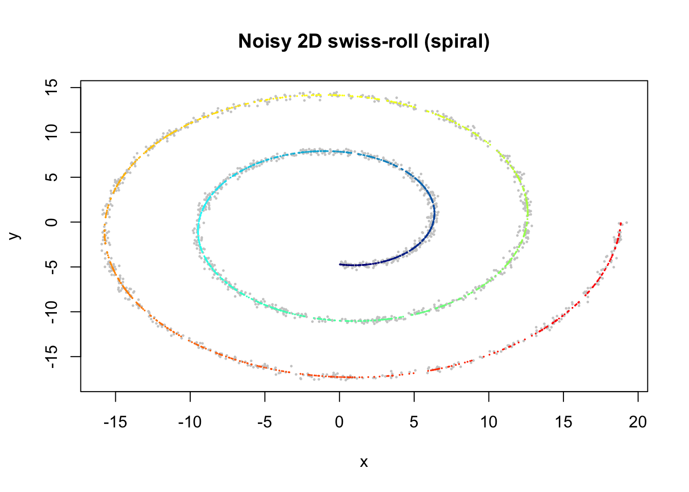
The simpliest principal curve is just using the initial PCA line (zero iterations).
library(princurve)
# Initial fit with zero iterations (just the initial PCA line)
pc_fit <- principal_curve(as.matrix(sim$obs), maxit = 0)
# Plot noisy observations (grey)
plot(sim$obs$x, sim$obs$y, pch = 16, cex = 0.35, col = "grey80",
xlab = "x", ylab = "y",
main = "Principal Curve Fit to Noisy Swiss-Roll",
asp = 1)
# Add principal curve (sorted by lambda!)
ord <- order(pc_fit$lambda)
lines(pc_fit$s[ord, 1], pc_fit$s[ord, 2], col = "black", lwd = 2)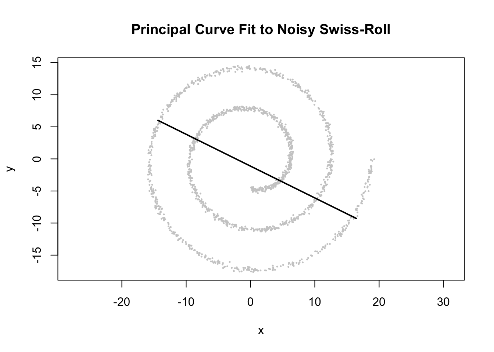
Apply principal curve fitting to recover the 1D structure with the default settings.
set.seed(123)
pc_fit <- principal_curve(as.matrix(sim$obs))
# Plot noisy observations (grey)
plot(sim$obs$x, sim$obs$y, pch = 16, cex = 0.35, col = "grey80",
xlab = "x", ylab = "y",
main = "Principal Curve Fit to Noisy Swiss-Roll",
asp = 1)
# Add principal curve (sorted by lambda!)
ord <- order(pc_fit$lambda)
lines(pc_fit$s[ord, 1], pc_fit$s[ord, 2], col = "black", lwd = 2)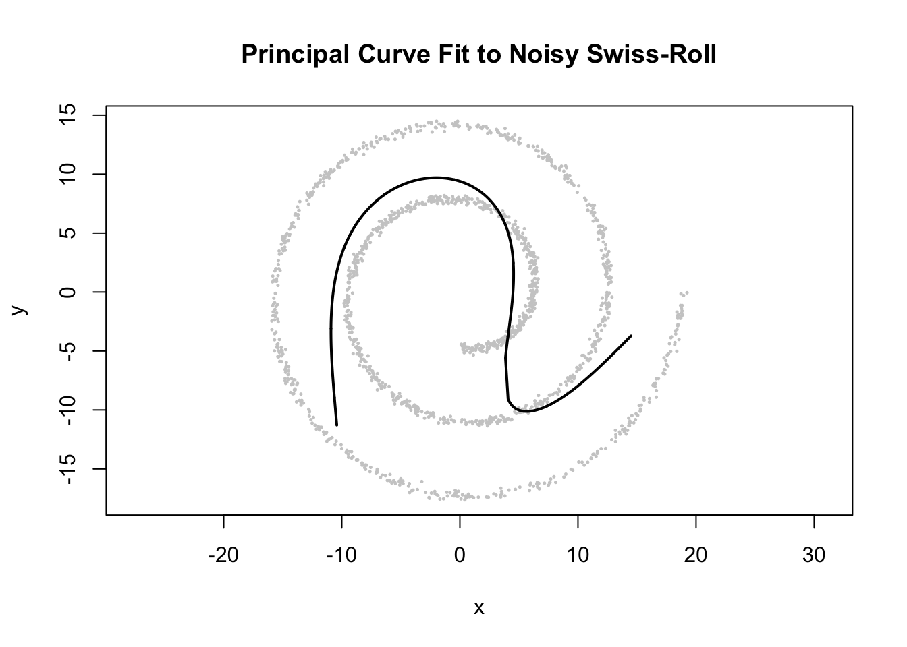
Try to increase fitting accuracy by lowering the convergence threshold.
set.seed(123)
pc_fit <- principal_curve(as.matrix(sim$obs), thresh = 0.0001,
stretch = 0, maxit = 100)
plot(sim$obs$x, sim$obs$y, pch = 16, cex = 0.35, col = "grey80",
xlab = "x", ylab = "y",
main = "Principal Curve Fit to Noisy Swiss-Roll",
asp = 1)
ord <- order(pc_fit$lambda)
lines(pc_fit$s[ord, 1], pc_fit$s[ord, 2], col = "black", lwd = 2)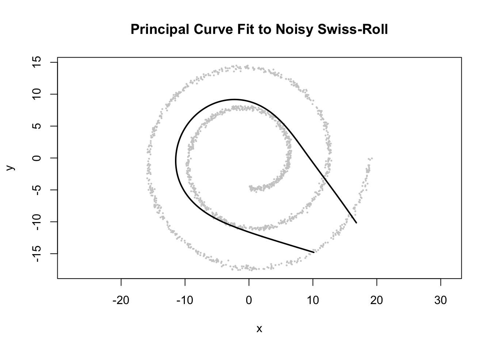
Try a different smoother: lowess.
set.seed(123)
pc_fit_lowess <- principal_curve(as.matrix(sim$obs), smoother = "lowess",
thresh = 0.0001,
maxit = 1000)
plot(sim$obs$x, sim$obs$y, pch = 16, cex = 0.35, col = "grey80",
xlab = "x", ylab = "y",
main = "Principal Curve Fit (lowess) to Noisy Swiss-Roll",
asp = 1)
ord <- order(pc_fit_lowess$lambda)
lines(pc_fit_lowess$s[ord, 1], pc_fit_lowess$s[ord, 2], col = "black", lwd = 2)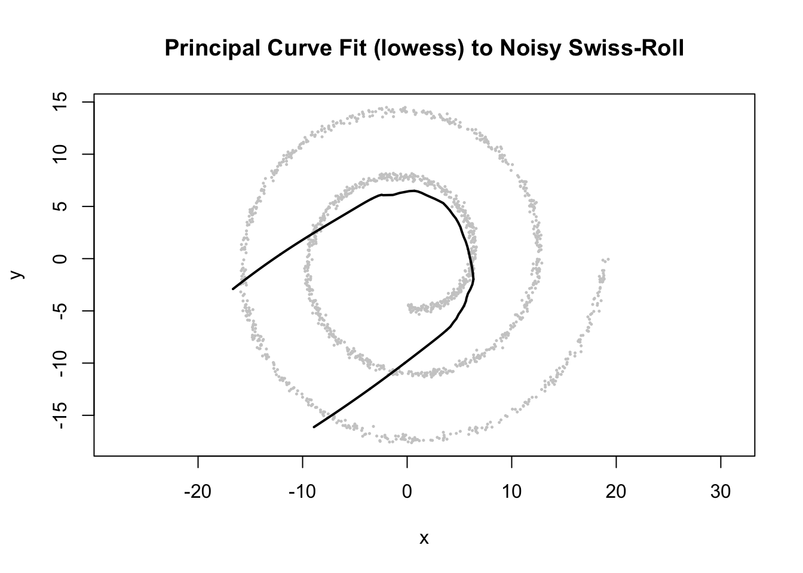
None of the above principal curve fittings are able to recover the 1D swiss-roll structure well, even when we switch to different smoothers.
Most likely it is due to the improper initialization using PCA line.
Now let’s try various way to initialize the SmoothEM algorithm to recover the 1D structure.
library(tibble)
library(tidyr)
library(ggplot2)Warning: package 'ggplot2' was built under R version 4.5.2library(Rtsne)
library(umap)
library(Matrix)
Attaching package: 'Matrix'The following objects are masked from 'package:tidyr':
expand, pack, unpackset.seed(123)
source("./code/plot_ordering.R")
source("./code/linear_EM.R")
source("./code/general_EM.R")
source("./code/prior_precision.R")
source("./code/kriging.R")Package 'mclust' version 6.1.2
Type 'citation("mclust")' for citing this R package in publications.
Attaching package: 'mclust'The following object is masked _by_ '.GlobalEnv':
logsumexpThe following object is masked from 'package:mvtnorm':
dmvnormThe following object is masked from 'package:matrixStats':
countX <- as.matrix(sim$obs)For comparison, let’s also start with PCA initialization.
set.seed(1234)
q <- 2
Q_prior_RW2 <- make_random_walk_precision(K = 65,
d=ncol(X),
lambda = 30,
q = q,
ridge = 0)
PC1 <- prcomp(X,center = TRUE, scale. = FALSE)$x[,1]
init_params <- make_init(X = X, ordering_vec = -PC1, K = 65)
result_RW2_PC1 <- EM_algorithm(
data = X,
Q_prior = Q_prior_RW2,
init_params = init_params,
max_iter = 1000,
modelName = "EEI",
tol = 1e-3,
eigen_tol = 0,
rank_deficiency = q * ncol(X),
nugget = 0,
relative_lambda = T,
verbose = F
)
result_RW2_PC1$clustering <- apply(result_RW2_PC1$gamma, 1, which.max)
result_RW2_PC1$position <- result_RW2_PC1$gamma %*% matrix(1:65, ncol=1)plot(X, cex=1,
xlab="X", ylab="Y",
pch=19)
# Turn mu_list into matrix
mu_matrix <- do.call(rbind, result_RW2_PC1$params$mu)
# Draw arrows showing sequence of cluster means
for (k in 1:(nrow(mu_matrix)-1)) {
if (sqrt(sum((mu_matrix[k+1,] - mu_matrix[k,])^2)) > 1e-6) {
arrows(mu_matrix[k,1], mu_matrix[k,2],
mu_matrix[k+1,1], mu_matrix[k+1,2],
col="orange", lwd=4, length=0.1)
}
}
points(mu_matrix, pch=8, cex=1, lwd=1, col="orange")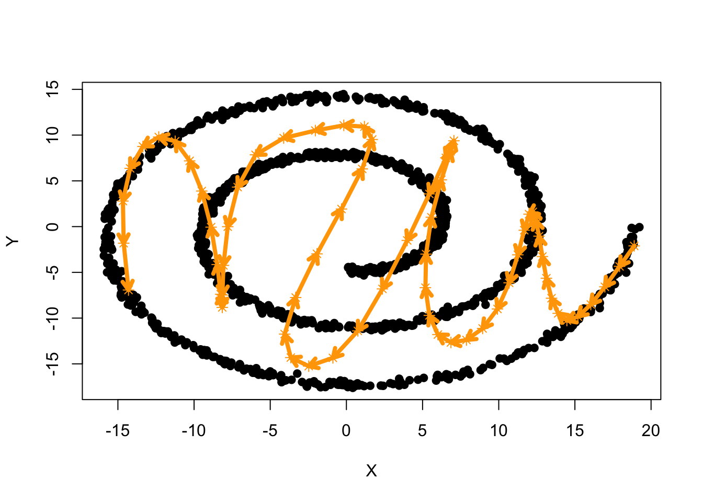
Just like what we would expect, the inferred curve is not able to recover the swiss-roll structure, as what we have seen in the principal curve fitting with PCA initialization.
Now let’s take the principal curve scores to initialize the SmoothEM.
pc_score <- pc_fit_lowess$lambda
init_params <- make_init(X = X, ordering_vec = -pc_score, K = 65)
result_RW2_pcurve <- EM_algorithm(
data = X,
Q_prior = Q_prior_RW2,
init_params = init_params,
max_iter = 1000,
modelName = "EEI",
tol = 1e-3,
eigen_tol = 0,
rank_deficiency = q * ncol(X),
nugget = 0,
relative_lambda = T,
verbose = F
)
result_RW2_pcurve$clustering <- apply(result_RW2_pcurve$gamma, 1, which.max)
result_RW2_pcurve$position <- result_RW2_pcurve$gamma %*% matrix(1:65, ncol=1)plot(X, cex=1,
xlab="X", ylab="Y",
pch=19)
# Turn mu_list into matrix
mu_matrix <- do.call(rbind, result_RW2_pcurve$params$mu)
# Draw arrows showing sequence of cluster means
for (k in 1:(nrow(mu_matrix)-1)) {
if (sqrt(sum((mu_matrix[k+1,] - mu_matrix[k,])^2)) > 1e-6) {
arrows(mu_matrix[k,1], mu_matrix[k,2],
mu_matrix[k+1,1], mu_matrix[k+1,2],
col="orange", lwd=4, length=0.1)
}
}
points(mu_matrix, pch=8, cex=1, lwd=1, col="orange")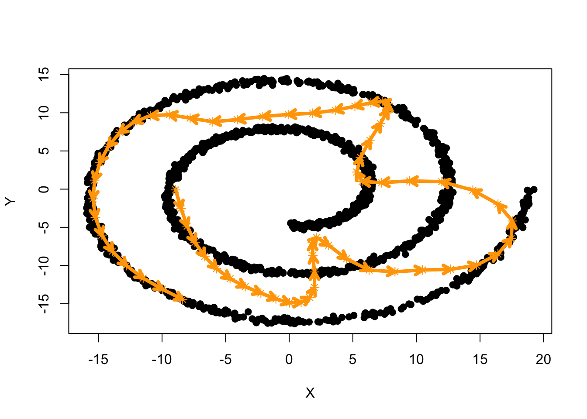
The principal curve initialization also fails to recover the swiss-roll structure.
Let’s try t-SNE to get a 1D ordering of the data points for initialization.
set.seed(123)
tsne_result <- Rtsne(X, dims = 2, perplexity = 10, verbose = FALSE, max_iter = 500)
init_params <- make_init(X = X, ordering_vec = -tsne_result$Y[,1], K = 65)
result_RW2_tsne <- EM_algorithm(
data = X,
Q_prior = Q_prior_RW2,
init_params = init_params,
max_iter = 1000,
modelName = "EEI",
tol = 1e-3,
eigen_tol = 0,
rank_deficiency = q * ncol(X),
nugget = 0,
relative_lambda = T,
verbose = F
)
result_RW2_tsne$clustering <- apply(result_RW2_tsne$gamma, 1, which.max)
result_RW2_tsne$position <- result_RW2_tsne$gamma %*% matrix(1:65, ncol=1)plot(X, cex=1,
xlab="X", ylab="Y",
pch=19)
# Turn mu_list into matrix
mu_matrix <- do.call(rbind, result_RW2_tsne$params$mu)
# Draw arrows showing sequence of cluster means
for (k in 1:(nrow(mu_matrix)-1)) {
if (sqrt(sum((mu_matrix[k+1,] - mu_matrix[k,])^2)) > 1e-6) {
arrows(mu_matrix[k,1], mu_matrix[k,2],
mu_matrix[k+1,1], mu_matrix[k+1,2],
col="orange", lwd=4, length=0.1)
}
}
points(mu_matrix, pch=8, cex=1, lwd=1, col="orange")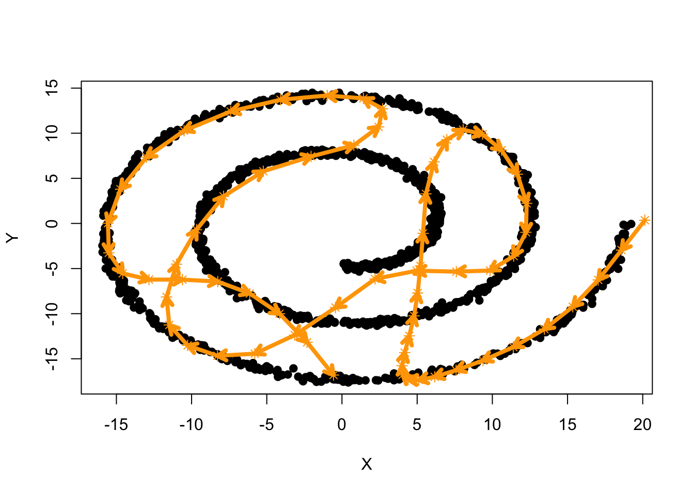
The t-SNE initialization also fails to recover the swiss-roll structure.
Now, let’s try the progressive multi-scale SmoothEM initialization.
result_RW2_multi <- progressive_smoothEM(
data = X,
m_max = 6,
lambda_final = 100,
q = 2,
ridge = 0,
nugget_kriging = 0,
tol = 1e-3,
max_iter = 1000,
relative_lambda = T,
plot_each_stage = F,
verbose = F
)
result_RW2_multi$clustering <- apply(result_RW2_multi$fits$K_65$gamma, 1, which.max)
result_RW2_multi$position <- result_RW2_multi$fits$K_65$gamma %*% matrix(1:65, ncol=1)plot(X, cex=1,
xlab="X", ylab="Y",
pch=19)
# Turn mu_list into matrix
mu_matrix <- do.call(rbind, result_RW2_multi$fits$K_65$params$mu)
# Draw arrows showing sequence of cluster means
for (k in 1:(nrow(mu_matrix)-1)) {
if (sqrt(sum((mu_matrix[k+1,] - mu_matrix[k,])^2)) > 1e-6) {
arrows(mu_matrix[k,1], mu_matrix[k,2],
mu_matrix[k+1,1], mu_matrix[k+1,2],
col="orange", lwd=4, length=0.1)
}
}
points(mu_matrix, pch=8, cex=1, lwd=1, col="orange")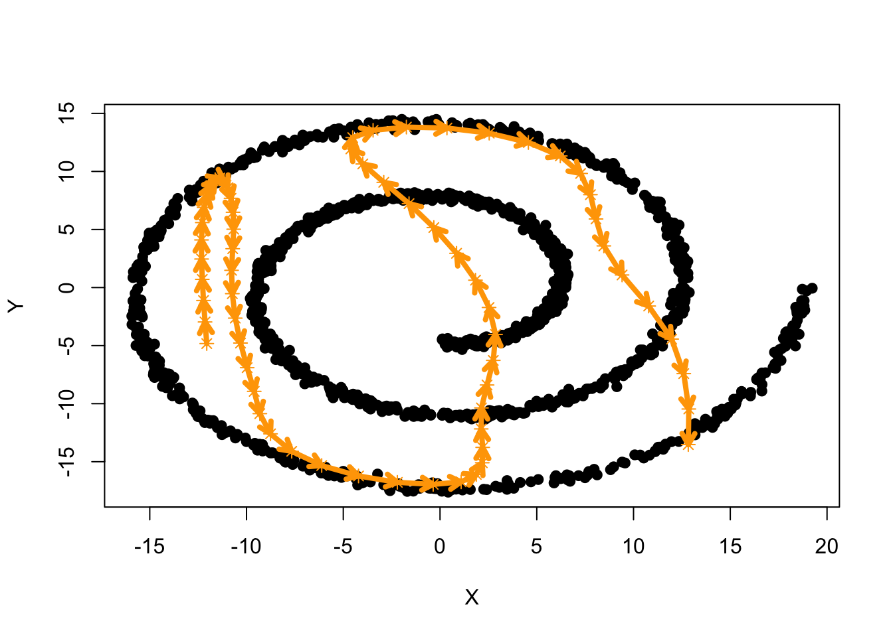
Still no luck in recovering the swiss-roll structure.
It seems like none of these methods provide a good visual recovery of the swiss-roll structure.
One possible reason is that the initialization orderings are all very different from the true underlying ordering (by t), and all of these iterative methods are really easy to get stuck in local optima in the ordering space.
Let’s cheat a bit by using the true underlying ordering to initialize the SmoothEM. We should see a much better objective value (ELBO) and visual recovery of the swiss-roll structure.
set.seed(1234)
init_params <- make_init(X = X, ordering_vec = -sim$t, K = 65)
result_RW2_cheat <- EM_algorithm(
data = X,
Q_prior = Q_prior_RW2,
init_params = init_params,
max_iter = 1000,
modelName = "EEI",
tol = 1e-3,
eigen_tol = 0,
rank_deficiency = q * ncol(X),
nugget = 0,
relative_lambda = T,
verbose = F
)
result_RW2_cheat$clustering <- apply(result_RW2_cheat$gamma, 1, which.max)
result_RW2_cheat$position <- result_RW2_cheat$gamma %*% matrix(1:65, ncol=1)plot(X, cex=1,
xlab="X", ylab="Y",
pch=19)
# Turn mu_list into matrix
mu_matrix <- do.call(rbind, result_RW2_cheat$params$mu)
# Draw arrows showing sequence of cluster means
for (k in 1:(nrow(mu_matrix)-1)) {
if (sqrt(sum((mu_matrix[k+1,] - mu_matrix[k,])^2)) > 1e-6) {
arrows(mu_matrix[k,1], mu_matrix[k,2],
mu_matrix[k+1,1], mu_matrix[k+1,2],
col="orange", lwd=4, length=0.1)
}
}
points(mu_matrix, pch=8, cex=1, lwd=1, col="orange")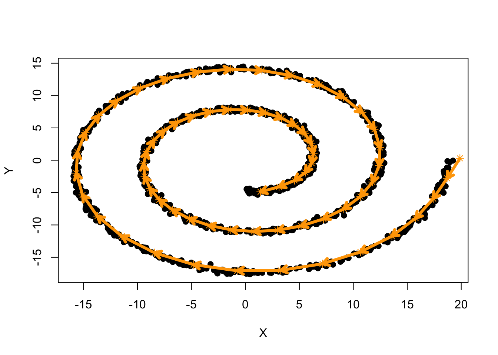
range_elbo <- c(
min(c(result_RW2_PC1$elbo_trace,
result_RW2_pcurve$elbo_trace,
result_RW2_tsne$elbo_trace,
result_RW2_multi$fits$K_65$elbo_trace,
result_RW2_cheat$elbo_trace)),
max(c(result_RW2_PC1$elbo_trace,
result_RW2_pcurve$elbo_trace,
result_RW2_tsne$elbo_trace,
result_RW2_multi$fits$K_65$elbo_trace,
result_RW2_cheat$elbo_trace))
)
# compare ELBOs
plot(NULL, xlim=c(1,300), ylim=range_elbo,
xlab="Iteration", ylab="ELBO",
main="ELBO Comparison")
lines(result_RW2_PC1$elbo_trace, col="blue", lwd=2)
lines(result_RW2_pcurve$elbo_trace, col="green", lwd=2)
lines(result_RW2_tsne$elbo_trace, col="purple", lwd=2)
lines(result_RW2_multi$fits$K_65$elbo_trace, col="orange", lwd=2)
lines(result_RW2_cheat$elbo_trace, col="red", lwd=2)
legend("bottomright",
legend=c("PCA Init", "P-Curve Init", "t-SNE Init", "Multi-scale Init", "Cheat Init"),
col=c("blue", "green", "purple", "orange", "red"),
lwd=2)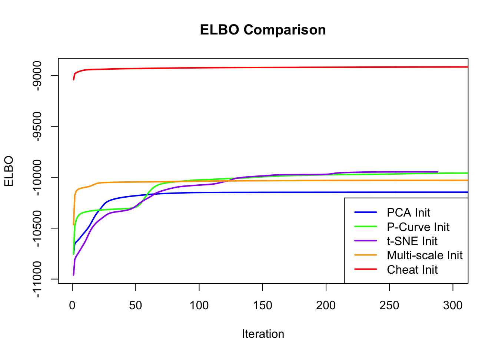
Let’s try to see when the SmoothEM fit starts to break down as we alter the initialization ordering to be more and more different from the true ordering.
set.seed(1234)
order_vec <- sim$t + rnorm(length(sim$t), sd=3)
# apply some monotone transformation to make it less correlated with true t
f <- function(x) {
# pnorm(x)
x
}
order_vec <- f(order_vec)
plot(rank(order_vec), rank(sim$t),
xlab="Altered Ordering Rank", ylab="True t Rank",
main="Altered vs True Ordering Ranks")
# show the lm line and its r2 on the plot
abline(lm(rank(sim$t) ~ rank(order_vec)), col="red", lwd=2)
r2 <- summary(lm(rank(sim$t) ~ rank(order_vec)))$r.squared
legend("topleft", legend=paste0("R^2 = ", round(r2, 3)), col="red", lwd=2)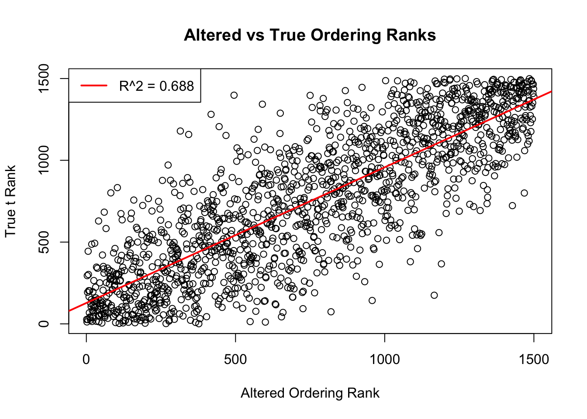
init_params <- make_init(X = X, ordering_vec = order_vec, K = 65)
result_RW2_cheat <- EM_algorithm(
data = X,
Q_prior = Q_prior_RW2,
init_params = init_params,
max_iter = 1000,
modelName = "EEI",
tol = 1e-3,
eigen_tol = 0,
rank_deficiency = q * ncol(X),
nugget = 0,
relative_lambda = T,
verbose = F
)
plot(X, cex=1,
xlab="X", ylab="Y",
pch=19)
# Turn mu_list into matrix
mu_matrix <- do.call(rbind, result_RW2_cheat$params$mu)
# Draw arrows showing sequence of cluster means
for (k in 1:(nrow(mu_matrix)-1)) {
if (sqrt(sum((mu_matrix[k+1,] - mu_matrix[k,])^2)) > 1e-6) {
arrows(mu_matrix[k,1], mu_matrix[k,2],
mu_matrix[k+1,1], mu_matrix[k+1,2],
col="orange", lwd=4, length=0.1)
}
}
points(mu_matrix, pch=8, cex=1, lwd=1, col="orange")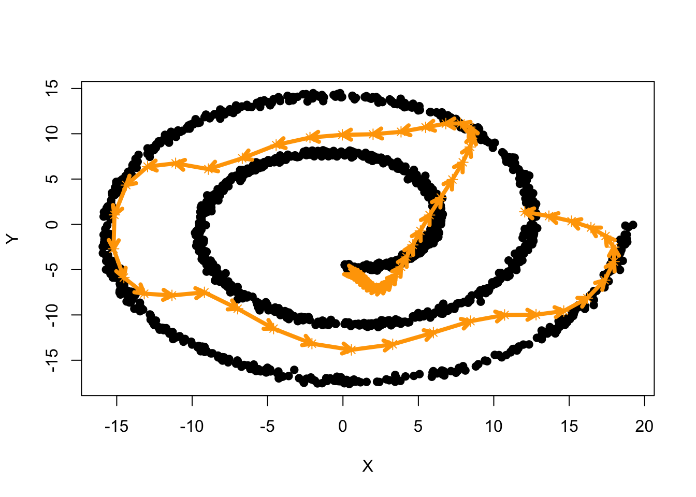
Now, let’s vary the amount of noise added to the true ordering to see how the final ELBO changes with respect to the \(R^2\) between the altered ordering and the true ordering.
r2_rank <- c()
elbo_final <- c()
for (sd_noise in seq(0, 5, by=0.1)) {
set.seed(1234)
order_vec <- sim$t + rnorm(length(sim$t), sd=sd_noise)
# apply some monotone transformation to make it less correlated with true t
f <- function(x) {
# pnorm(x)
x
}
order_vec <- f(order_vec)
r2 <- summary(lm(rank(sim$t) ~ rank(order_vec)))$r.squared
r2_rank <- c(r2_rank, r2)
init_params <- make_init(X = X, ordering_vec = order_vec, K = 65)
result_RW2 <- EM_algorithm(
data = X,
Q_prior = Q_prior_RW2,
init_params = init_params,
max_iter = 1000,
modelName = "EEI",
tol = 1e-3,
eigen_tol = 0,
rank_deficiency = q * ncol(X),
nugget = 0,
relative_lambda = T,
verbose = F
)
elbo_final <- c(elbo_final, tail(result_RW2$elbo_trace, n=1))
}
save(r2_rank, elbo_final, file="./data/swiss_roll_r2_elbo.RData")Showing the relationship between the final ELBO from SmoothEM and the \(R^2\) between the altered initialization ordering and the true ordering. The amount of noise added to the true ordering increases from 0 to 5 in steps of 0.1, shown as text labels on the plot.
load("./data/swiss_roll_r2_elbo.RData")
plot(r2_rank, elbo_final,
xlab="R^2 between Altered and True Ordering Ranks", ylab="Final ELBO",
main="Final ELBO vs R^2 of Initialization Ordering")
lines(smooth.spline(r2_rank, elbo_final, df=5), col="red", lwd=2)
# show sd in each point
text(r2_rank, elbo_final, labels=seq(0, 5, by=0.1), pos=3)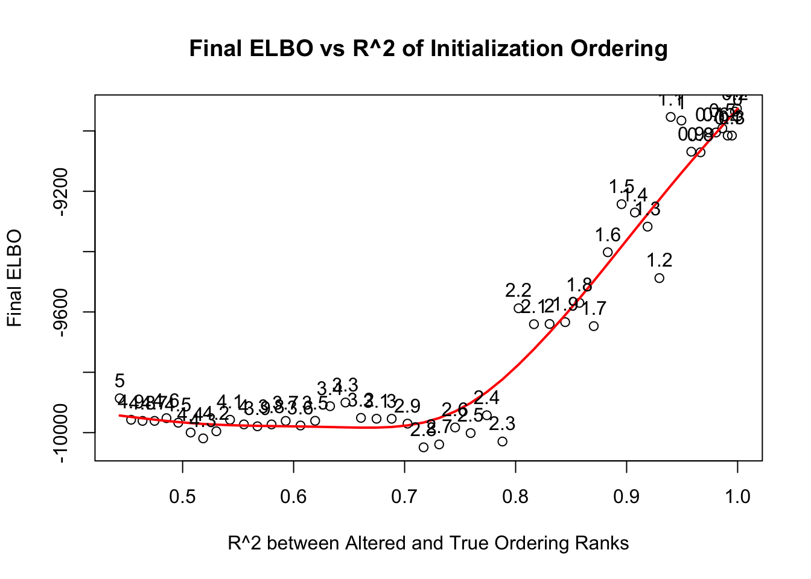
sessionInfo()R version 4.5.1 (2025-06-13)
Platform: aarch64-apple-darwin20
Running under: macOS Sequoia 15.6.1
Matrix products: default
BLAS: /Library/Frameworks/R.framework/Versions/4.5-arm64/Resources/lib/libRblas.0.dylib
LAPACK: /Library/Frameworks/R.framework/Versions/4.5-arm64/Resources/lib/libRlapack.dylib; LAPACK version 3.12.1
locale:
[1] en_US.UTF-8/en_US.UTF-8/en_US.UTF-8/C/en_US.UTF-8/en_US.UTF-8
time zone: America/Chicago
tzcode source: internal
attached base packages:
[1] stats graphics grDevices utils datasets methods base
other attached packages:
[1] mclust_6.1.2 mvtnorm_1.3-3 matrixStats_1.5.0 Matrix_1.7-4
[5] umap_0.2.10.0 Rtsne_0.17 ggplot2_4.0.1 tidyr_1.3.1
[9] tibble_3.3.0 princurve_2.1.6 workflowr_1.7.2
loaded via a namespace (and not attached):
[1] sass_0.4.10 generics_0.1.4 lattice_0.22-7 stringi_1.8.7
[5] digest_0.6.39 magrittr_2.0.4 evaluate_1.0.5 grid_4.5.1
[9] RColorBrewer_1.1-3 fastmap_1.2.0 rprojroot_2.1.1 jsonlite_2.0.0
[13] processx_3.8.6 RSpectra_0.16-2 whisker_0.4.1 ps_1.9.1
[17] promises_1.5.0 httr_1.4.7 purrr_1.2.0 scales_1.4.0
[21] jquerylib_0.1.4 cli_3.6.5 rlang_1.1.6 withr_3.0.2
[25] cachem_1.1.0 yaml_2.3.12 otel_0.2.0 tools_4.5.1
[29] dplyr_1.1.4 httpuv_1.6.16 reticulate_1.44.1 png_0.1-8
[33] vctrs_0.6.5 R6_2.6.1 lifecycle_1.0.4 git2r_0.36.2
[37] stringr_1.6.0 fs_1.6.6 pkgconfig_2.0.3 callr_3.7.6
[41] pillar_1.11.1 bslib_0.9.0 later_1.4.4 gtable_0.3.6
[45] glue_1.8.0 Rcpp_1.1.0 xfun_0.55 tidyselect_1.2.1
[49] rstudioapi_0.17.1 knitr_1.50 dichromat_2.0-0.1 farver_2.1.2
[53] htmltools_0.5.9 rmarkdown_2.30 compiler_4.5.1 getPass_0.2-4
[57] S7_0.2.1 askpass_1.2.1 openssl_2.3.4